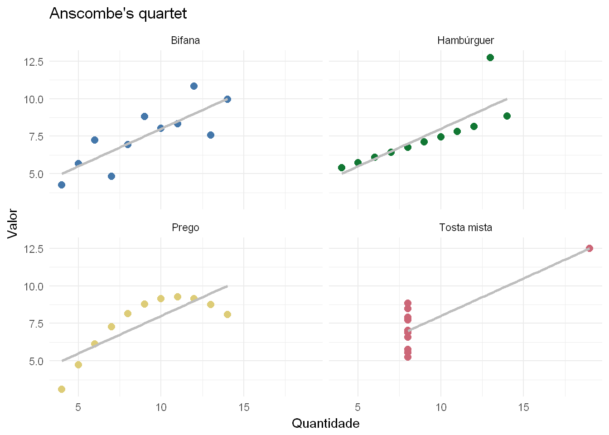

By António Cruz | February 13, 2017
Quando temos de analisar dados e tentar extrair conhecimento, depois de obviamente os recolher e importar, das primeiras coisas que fazemos é efetuar um sumário com as informações mais relevantes.
Nesses sumários é muito comum elaborarmos estatísticas que representem a centralidade e dispersão dos dados, características fundamentais para a compreensão dos mesmos e ponto de partida para posteriores análises.
Mas por vezes esses sumários são enganadores e podem levar a conclusões ou ilações que não representam a realidade.
Para exemplificar esta questão, vamos supor que eu estou a analisar um conjunto de entidades e quero perceber se existem diferenças entre elas. Podem ser, por exemplo, comparar alunos com base em notas de diferentes disciplinas, países com base em diferentes variáveis macroeconómicas ou produtos com base nos dados de vendas. Vocês percebem a ideia.
Vamos então considerar para o nosso exemplo que tenho 11 meses de venda de 4 produtos distintos:
Bifana
Prego
Hambúrguer
Tosta mista
E para cada um dos produtos e mês em análise, vamos igualmente supor, que tenho a soma das unidades e o valor total vendido por cada um dos 11 meses.
Como este nosso negócio é muito concorrencial, o preço pode ter variado no mesmo dia, ou pode ter acontecido alguma promoção ou desconto em função de uma data especifica.
Primeiro vamos analisar a média e desvio padrão da quantidade vendida por mês, para os quatro produtos.
| Produto | Média | Desvio Padrão |
|---|---|---|
| Bifana | 9.00 | 3.32 |
| Hambúrguer | 9.00 | 3.32 |
| Prego | 9.00 | 3.32 |
| Tosta mista | 9.00 | 3.32 |
Vamos repetir a análise, mas agora para o valor médio das vendas mensais:
| Produto | Média | Desvio Padrão |
|---|---|---|
| Bifana | 7.50 | 2.03 |
| Hambúrguer | 7.50 | 2.03 |
| Prego | 7.50 | 2.03 |
| Tosta mista | 7.50 | 2.03 |
Podemos verificar pela sumarização dos dados que os 4 produtos obtêm resultados idênticos para o período dos 11 meses em análise.
Em media vendemos 9 unidades e um valor total de 7.5€ por mês (sim eu sei. Com estas quantidades e valores mais vale criar outro negócio)
Mas vamos aprofundar a nossa análise. Vamos tentar perceber qual a correlação entre a quantidade e valor para cada um dos produtos vendidos.
| Produto | Correlação |
|---|---|
| Bifana | 0.82 |
| Hambúrguer | 0.82 |
| Prego | 0.82 |
| Tosta mista | 0.82 |
Mais uma vez os dados mostram que os quatro produtos são idênticos. Mas também podemos perceber que o valor não depende exclusivamente da quantidade vendida.
Mas como ainda não estamos satisfeitos, vamos criar uma regressão linear em que a variável explicada ou dependente é o valor das vendas e a variável explicativa ou independente é a quantidade vendida, i.e., vamos tentar perceber em que medida a quantidade explica o valor das vendas.
| Produto | R2 | Ordenada | Declive |
|---|---|---|---|
| Bifana | 0.67 | 3.00 | 0.50 |
| Hambúrguer | 0.67 | 3.00 | 0.50 |
| Prego | 0.67 | 3.00 | 0.50 |
| Tosta mista | 0.67 | 3.00 | 0.50 |
Como podemos verificar, quer o \(R^2\) quer o ponto de interceção da reta com o eixo vertical, quer o declive, são iguais para todos os produtos e basicamente temos um modelo que nos diz que para cada uma bifana, prego, hambúrguer ou tosta mista vendida o valor faturado sobe 0.5 Euros. O exemplo não é brilhante, mas o importante é que os modelos que resultam dos dados são iguais para todos os produtos.
Concluindo, se olharmos para a média, desvio padrão, correlação entre quantidade e valor, e um modelo de regressão que explica o valor em função da quantidade, os produtos são iguais.
Mas serão mesmo?
Vamos então visualizar os dados que estão na base destes cálculos.

Afinal, vender bifanas, pregos, hambúrgueres ou tostas mistas, não é a mesma coisa.
Podemos ver que a relação é de facto linear para a Bifana. O mesmo acontece com os Hambúrgueres, mas neste caso especifico temos um mês que é um outlier e que cria uma variabilidade na relação entre quantidade e preço que não existe nos restantes meses. Talvez naquele mês tenha existido um conjunto de atividades culturais realizadas a horas pouco comuns o que nos permitiu praticar um preço acima do normal e como tal faturar mais com a mesma quantidade. Mas, se calhar, esse mês já não se vai repetir.
No caso dos pregos o que aconteceu é curioso: porque a partir de determinada quantidade vendida o valor faturado começa a descer. Talvez tenha sido necessário baixar os preços porque as pessoas deixaram de comer tantos pregos !!
Na tosta mista, tirando um mês bastante anormal, vendemos sempre a mesma quantidade mas o valor variou bastante. Portanto, a quantidade não parece ter influência no valor.
Os dados utilizados neste exemplo foram construídos pelo estatístico Francis Anscombe, em 1973, para exemplificar a importância da visualização na fase inicial de análise e o efeito de outliers nas propriedades estatísticas dos dados.
Esta análise ou principio é conhecido como Anscombe’s quartet.
Este exemplo pretende apenas chamar a atenção para a importância da visualização dos dados em qualquer análise e o cuidado que é necessário ter antes de tirarmos conclusões e tomarmos decisões com base nos dados.
Os números também enganam e o que nós, certamente, não queremos é tomarmos uma decisão que terá um impacto relevante no futuro, com base em informação que não representa a realidade.